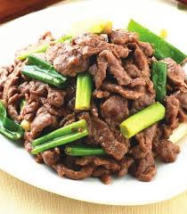
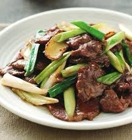
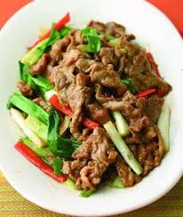

起油鍋先將牛肉絲下鍋炒製5分熟後起鍋備用。
另起油鍋，將薑絲、蒜、蔥白下鍋爆香。
再來將步驟2的牛肉絲與醬油、蠔油倒入鍋中拌炒。
最後將蔥綠、辣椒下鍋拌炒後，從鍋邊嗆入米酒就完成了喔。
  
薑絲炒大腸介紹 荷包蛋介紹 焢肉飯介紹 心得
練習 影片 音樂
Your browser does not support the audio element. Your browser does not support the video tag.